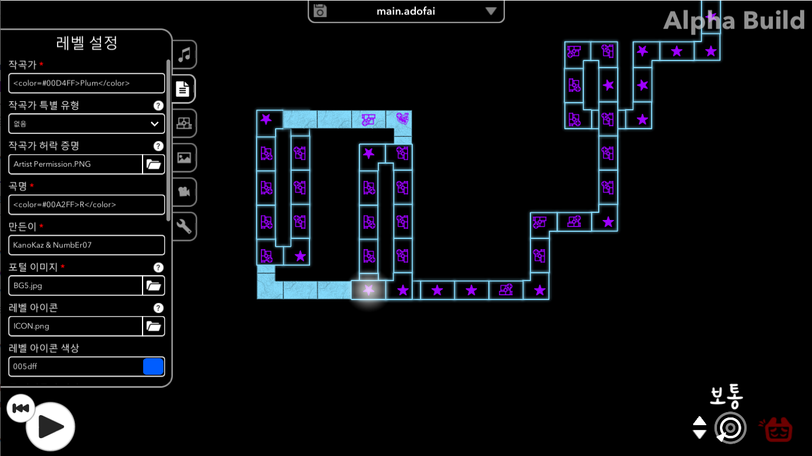
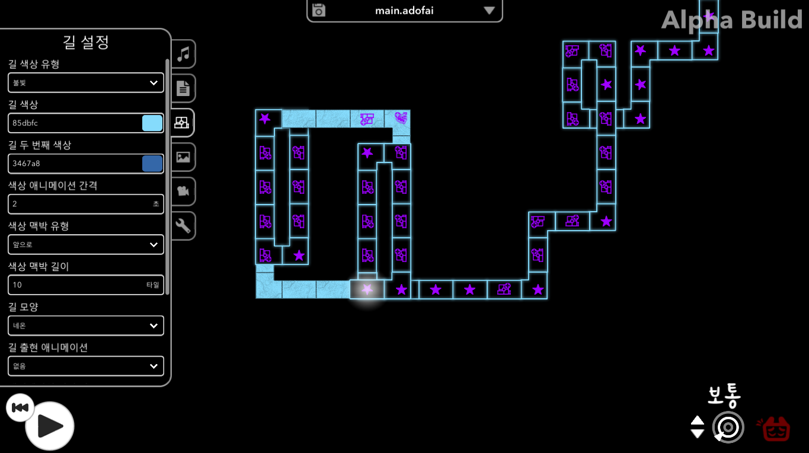

Custom
A Dance of Fire and Ice 커스텀
A Dance of Fire and Ice(줄여서 얼불춤) 커스텀은 공식 맵보다 더 어렵고 퀄리티가 높다.
1) 얼불춤 커스텀 하는 방법
1-1) 먼저 게임이 시작하면 커스텀 레벨로 들어간다.
1-2) 들어가면 내가 구독해 놓은 맵들이 뜨게 되는데 내가 하고싶은 맵을 찾아서 플레이하면 된다.
1-3) 맵에 들어가면 판정(느슨, 보통, 엄격)을 선택할수 있다. 나에게 맞는 판정을 선택해 플레이하자.
esc 를 누르고 수정을 누르면 레벨 에디터로 이동된다.
2) 레벨 에디터
레벨 에디터에서는 내가 플레이 하고있는 맵을 수정, 연습할수 있다.
3)에디터 사용법
3-1) 곡 설정
곡 설정에서는 BPM, 음량, 오프셋 등 곡의 기본적인 것들을 구성하는 곳이다.
3-2) 레벨 설정

레벨 설정에서는 작곡가, 곡 이름 설정 만든이, 포털 이미지 등 을 설정해 커스텀 로비에서 보여지는 것들을 관리한다.
3-3) 길 설정

길 설정에서는 타일의 색, 모양, 출연 애니메이션 등 타일의 모양과 효과를 관리한다.
3-4) 배경 설정
배경 설정에서는 게임 플레이시 나타나는 뒷배경을 관리한다.
3-5) 카메라 설정
카메라 설정에서는 게임 플레이시 플레이어를 따라가는 카메라를 제어한다.